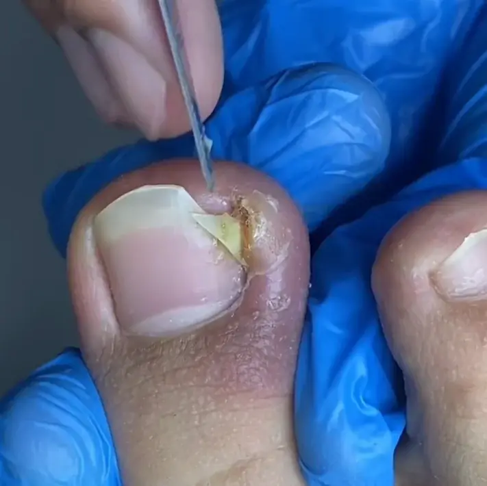
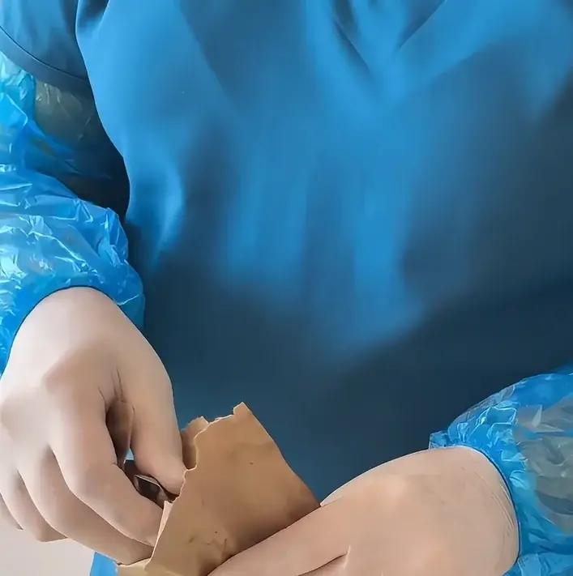
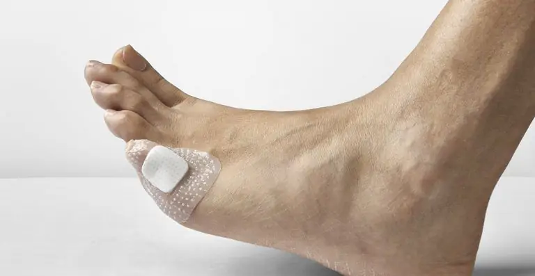

Tratamiento Podológico de Uñas Encarnadas en Santa Marta
Deja atrás el dolor
de la uña encarnada
para siempre
Podólogos con título te atienden con dedicación en nuestro consultorio o en tu casa, y desde la primera cita le damos solución a tu caso, sin largas esperas ni trámites de EPS.

Una uña encarnada que no se trata empeora con el tiempo
Si te duele al caminar, la infección regresa una y otra vez y los remedios caseros no llegan al fondo del problema, la solución de verdad es un tratamiento podológico profesional.
Cirugía de uña encarnada en Santa Marta — se trata de un procedimiento ágil, sin hospitalización, en el que usamos anestesia local cuando el caso lo requiere.
Especialistas en uñas encarnadas a domicilio en Santa Marta — trabajamos con instrumental de esterilización certificada y seguimos un protocolo estricto de bioseguridad durante toda la atención.
Donde sacan uñas encarnadas en Santa Marta sin esperar autorizaciones de la EPS, con atención particular y cita para el mismo día por WhatsApp.
Tratamiento de uñas encarnadas en Santa Marta con seguimiento posterior al procedimiento para que te recuperes de la mejor manera.

¿Cómo tratamos tu uña encarnada?
Como ningún caso es igual a otro, nuestros podólogos revisan tu situación y, en la misma consulta, escogen la técnica que mejor se ajusta a ti.
Evaluación y diagnóstico
Evaluamos con detalle la uña y los tejidos de alrededor para saber qué tan afectada está y definir cuál es la intervención más adecuada.
Cirugía uña encarnada
Es un procedimiento ambulatorio con técnica mínimamente invasiva, así que no necesitas hospitalización, te recuperas pronto y además cuentas con seguimiento después.
Prevención de recaída
Te damos consejos prácticos sobre cómo cortar la uña, qué calzado usar y qué cuidados tener después de la intervención, para que el problema no reaparezca.

Tu tratamiento en 4 pasos
Escríbenos
Escríbenos por WhatsApp y cuéntanos qué te pasa, que te contestamos enseguida.
Agenda tu cita
Acordamos contigo la hora y el lugar, en tu casa o en la Carrera 17 #24A-40, sin filas ni papeleos.
Evaluación y procedimiento
Cuando tu caso lo permite, el podólogo te valora y te hace el tratamiento sin salir de esa misma cita.
Seguimiento
Estamos pendientes de ti a lo largo de la recuperación para que obtengas el mejor resultado posible.

Samarios que ya no sufren de uñas encarnadas
¿Cuándo debo buscar atención urgente?
No lo dejes para después si el enrojecimiento pasa más allá del dedo, sale pus o tienes fiebre, o si tienes diabetes y aparece cualquier herida en el pie, porque una uña encarnada infectada puede complicarse en cuestión de horas. Escríbenos ahora y te orientamos.
Precios claros para tu tratamiento
Tarifas enfocadas en uñas encarnadas y en otros servicios podológicos complementarios, sin trámites de EPS y con pago directo el día de tu cita en consultorio o a domicilio.
Pedicure médico
Un podólogo con instrumental estéril se encarga del corte y limado correctivo de las uñas, quita callosidades y durezas, limpia los bordes e hidrata la piel.
Onicectomía parcial · por canal
Quitamos el borde encarnado de la uña con anestesia local y hacemos la curación, y el precio se calcula por cada canal tratado.
Fenolización · por canal
Es la operación definitiva, una cauterización química de la matriz pensada para que la uña no se encarne de nuevo, y su valor se cobra por cada canal tratado.
Verrugas plantares
Retiramos verrugas plantares y, como el precio varía según la cantidad y el tamaño de las verrugas, lo definimos durante la valoración.
Preguntas frecuentes
¿El tratamiento de uña encarnada duele?
¿Puedo ir a trabajar el mismo día?
¿La uña encarnada puede volver a salir?
¿Atienden a domicilio para uñas encarnadas?
¿Necesito agendar cita previa?
¿Sigues sufriendo con esa
uña encarnada?
Mándanos un mensaje hoy, sin esperar más, y un profesional te atiende y deja tu cita agendada ese mismo día.
Vamos hasta tu casa en Santa Marta
Te atendemos en el consultorio o vamos hasta tu casa
Te atendemos en el consultorio de la Carrera 17 #24A-40 y también a domicilio, y en ese caso el podólogo lleva hasta tu casa el instrumental esterilizado y todo lo que hace falta.
- Centro
- El Rodadero
- Bello Horizonte
- Mamatoco
- Gaira
- Otros sectores
Pedi-Spa
Podología Santa Marta
Forma de atención
Consultorio en la Carrera 17 #24A-40 y domicilioToda Santa Marta
Horario de atención
Lunes a Domingo · 8:00 AM – 6:00 PMEscríbenos para confirmar disponibilidad
Separa tu cita
+57 315 583 2882